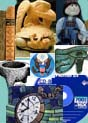
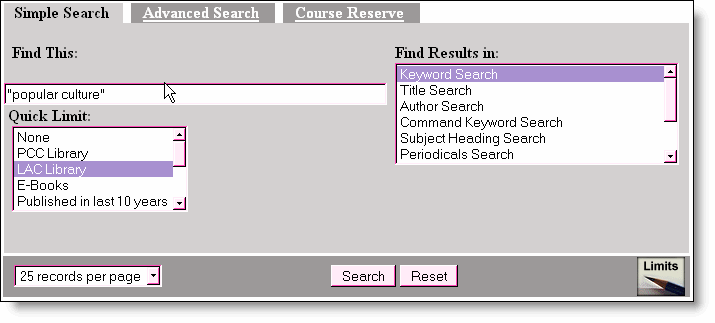

|
Doing
Research on Cultural Artifacts
A
cultural artifact is an object created by man which inherently
gives cultural clues about the person who made it and the
person who uses it. The artifact may change over time in what
it represents, how it appears and how and why it is used as
the culture changes over time. Do you have cultural links
to this item? How does this item make you feel? Is there a
message or background to the item? Are you aware of how your
item may have changed over time? What kind of memories or
images does it conjure up for you? What are the cultural connections
with this item? How is it perceived by other cultures?
|

|
To begin research
on a cultural artifact start with a keyword search
in the online catalog, Voyager,
using the term for your object or the word artifact, or the phrase
"popular culture" and using a Quick Limit
for the Library you want to find the item in. There are several
electronic books on popular culture which may be read from home
using your internet connection.

You You can also browse the shelves at E169
for books on popular culture in the United States and find, for
example:
Title: Encyclopedia
of contemporary American culture. 2001.
Location: LAC Reference Room Collection.
Call Number: E169.12 .E49 2001
Title: Handbook
of American popular culture. 1978-1981.
Location: LAC Book Shelves. Call
Number: E169.1 .H2643
You may also
search for information about artifacts on the internet or use the
Library's Online Databases such as:
Encyclopedia
Britannica
ProQuest
SIRS Renaissance or SIRS Researcher
One of the
best Internet resources to use is American Memory from the Library
of Congress http://memory.loc.gov/amhome.html.
"American Memory is a gateway to rich primary source materials
relating to the history and culture of the United States. The site
offers more than 7 million digital items from more than 100 historical
collections."
 Library
Homepage
Library
Homepage |
http://lib.lbcc.edu/handouts/cultural_artifact.html
Compiled 3/2004 by P. Nielson
|
|